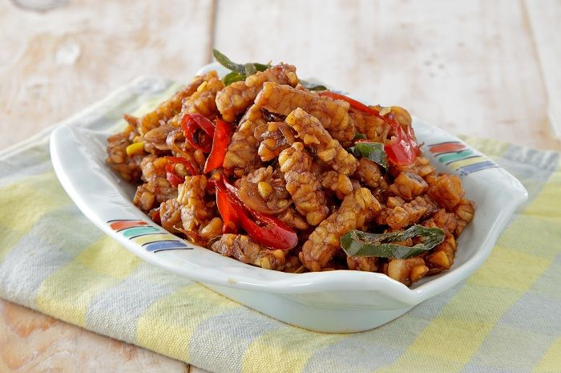

Resep Orek tempe
Ilustrasi orek tempe
Orek tempe adalah makanan tradisional yang mudah dibuat di rumah.Berasal dari tanah Jawa,ini adalah olahan tempe yang dipotong kecil dan dimasak dengan gula dan serta kecap.
Bahan-bahan :
- 300 gram tempe,potong dadu 2cm,goreng hingga setengah matang.
- 3 siung bawang putih,iris halus
- 3 sdm kecap manis pedas
- 2 Lembar daun salam
- 2cm Lengkuas
- 2 sdt Royco kaldu ayam
- ½ sdt Gula pasir
- ½ sdt garam
- 200 ml air
- 3 sdm minyak,untuk menumis
Cara memasak :
- Panaskan minyak,tumis bawang putih,lengkuas,dan daun salam Hingga harum
- Masukan tempe ,Royco kaldu ayam,kecap manis pedas,dan air
- Aduk rata
- Masak hingga bumbu meresap dan air mengering
- Angkat dan Sajikan